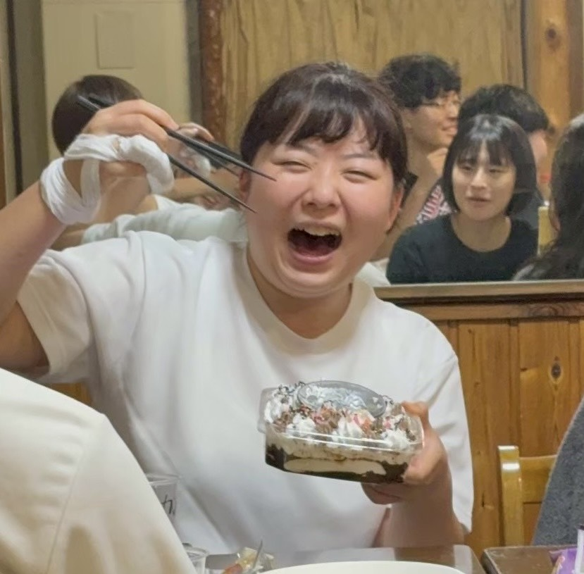

・学年：4年
・役職：主務
・趣味：レベル上げ
▶ メッセージ
中村先輩へ 4年間お疲れ様でした！ 優しい中村先輩は、いつも俺らをまとめる役割としても、メンケア専門としても、沢山お世話になりました！！ 少林寺だけでなくドラクエもたくさん教えていただきました！本当にありがとうございます。 未だにドラクエ8クリアしてない俺は、中村先輩に殺されるべきなのかもしれませんが、モンスターズがおもろすぎてごめんなさい、、 どうか、大人になって余裕ができたらSP版買ってやりましょう！！ イルルカほんとやばいです、ドレアムとかマジェスなんかでてます、マジェスドレアム！！ マジェスティすぎますよね、俺免許取れてないけど、、 中村先輩の知的でいて優しさのある、そんな人柄に憧れました！ 中村先輩の大変さをようやく理解する立場になってきました。先輩のような人になれればいいなと、それがきっとみんなにとっては理想なんだと思います！！ どうか新しい就職先でも頑張ってください！！ たまには修練来てくださいね！